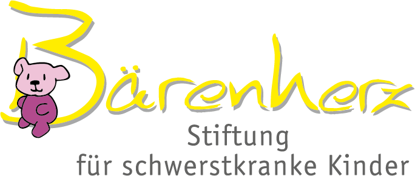
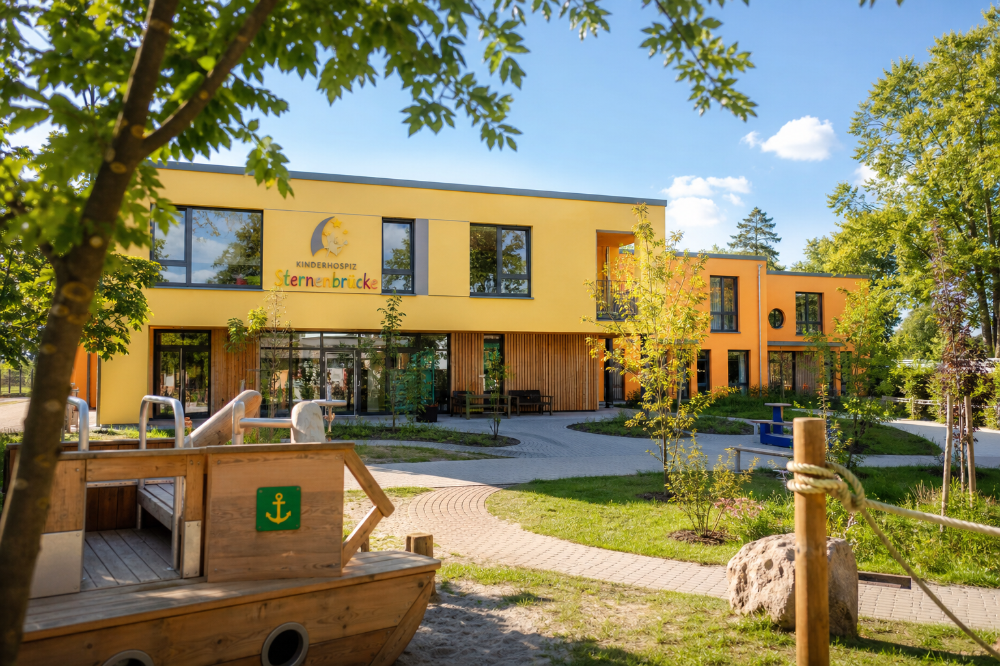
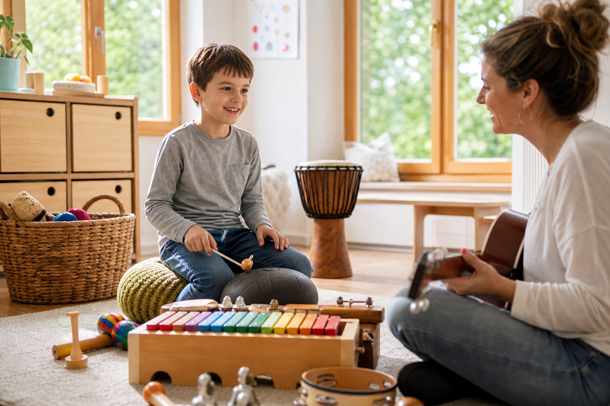
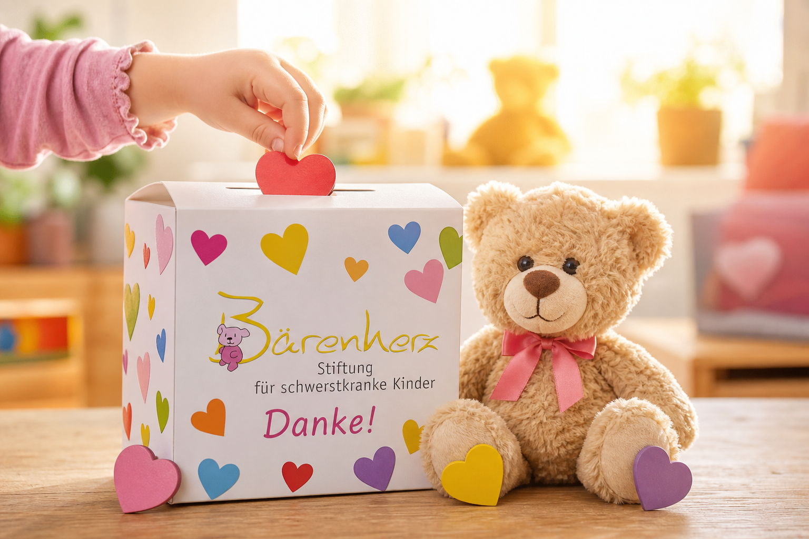

Wir sind stolz darauf, das Kinderhospiz Bärenherz über die Bärenherz Stiftung zu fördern. Diese Stiftung leistet bemerkenswerte Arbeit für Familien, deren Kinder unheilbar erkrankt sind – und begleitet sie mit Fürsorge, Empathie und hoher fachlicher Kompetenz.


Ein Kinderhospiz ist kein Ort, den Familien wählen, aber oft ein Ort, den sie dringend brauchen. Dort finden sie Sicherheit, Trost und Gemeinschaft in ihren schwierigsten Lebensmomenten. Die Bärenherz Stiftung stellt sicher, dass diese wertvolle Arbeit langfristig möglich ist – auch und gerade dort, wo öffentliche Mittel nicht ausreichen.

Für uns ist die Unterstützung der Bärenherz Stiftung eine Herzensangelegenheit. Mit regelmäßigen Spenden möchten wir dazu beitragen, dass Familien in einer extrem belastenden Lebenssituation Entlastung und eine menschliche Begleitung erfahren können.
Die Arbeit von Bärenherz bedeutet Lebensqualität, Würde und Hoffnung – auch dann, wenn die Zeit begrenzt ist.

Lassen Sie uns gemeinsam Hoffnung schenken.
Erfahren Sie mehr über unsere Partnerschaft mit der Bärenherz Stiftung oder sprechen Sie uns direkt an.
Kostenlos & unverbindlich. Antwort innerhalb von 24 Stunden.